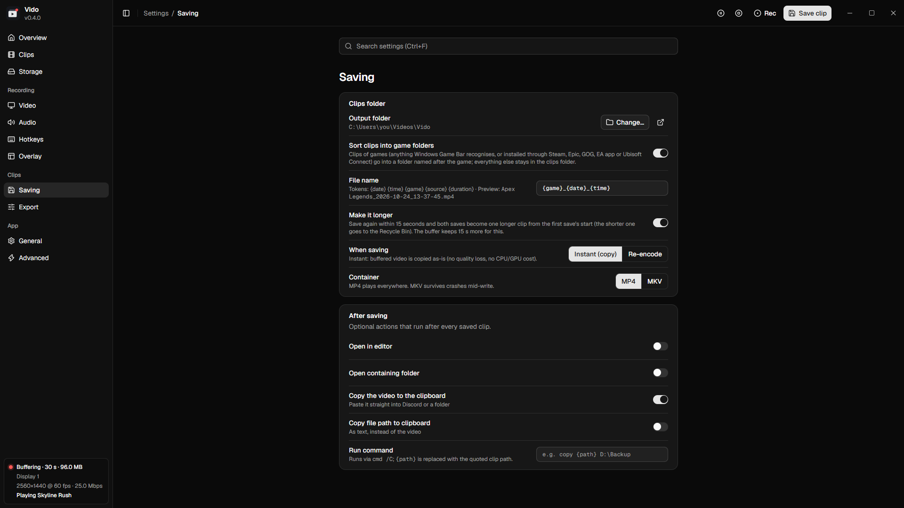
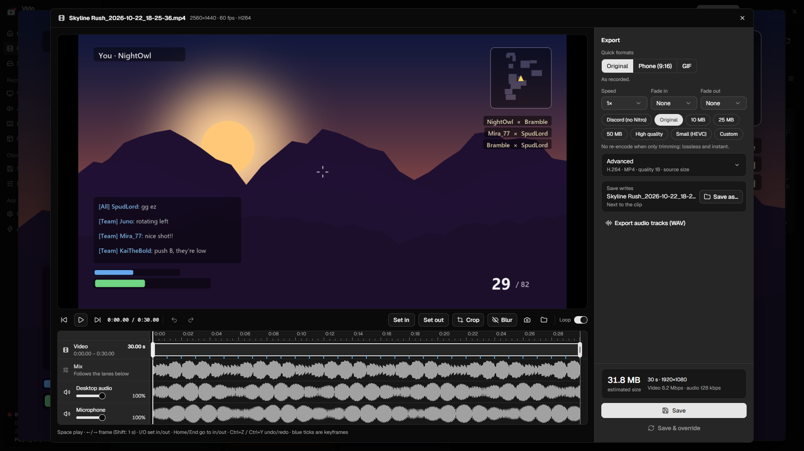

Everything a clipping app should do.
Nothing it shouldn't.
Instant saves, a real editor and sensible defaults, in an app that idles at about 30 MB and never asks you to sign in.
Missed the ending? Just save again.
Press save within 15 seconds and both saves become one longer clip. The short one goes to the Recycle Bin, so there's nothing to stitch together.
Discord-sized, automatically.
Vido saves instantly, compresses in the background, and only pings you when the small file is ready to paste.
- Presets for Discord's 10 / 20 / 25 / 50 MB limits
- Hardware encoding on your GPU
- The big original never shows up in your folder

Every device on its own track.
Game audio, voice chat and your mic are recorded separately, plus a mix that plays everywhere. Mute your mic after the fact and hear the change live.
- Volume and mute per track, previewed live
- Export every track as WAV
- Optional noise suppression for mics

Hide names and chat in two drags.
Drop blur boxes over usernames, chat or anything private. You see the blur live, and it's burned into the export.

Phone-ready. GIF-ready. One click.
9:16 for Shorts, TikTok and Reels: drag a vertical window or fit the whole frame on a soft blurred background. Or turn the moment into a GIF.
- Speed from 0.25× to 4×, fade in and out
- Trim, crop and screenshot any frame
- Save as a copy or replace the clip

Small things that add up.
Sorted by game
Vido recognises the game through Windows Game Bar and your launchers, and files every clip in its own folder.
Ctrl+V or drag it out
Each saved clip is on your clipboard as a real video file. Paste it into chat, or drag it straight out of Vido.
Storage page
See space per game and your biggest clips, and shrink old clips to a fraction of the size in one click.
Only while you play
Optionally, the buffer starts with your game and stops a minute after it closes.
Updates on your terms
Vido checks GitHub for new versions and asks first. Automatic installs are opt-in.
Portable
Unzip and run, with settings next to the exe. Or use the per-user installer, no admin needed.
Built to stay out of your way.
Vido vs. Bloated Competitor
If you want a social network for your clips, the competitor does more of that. If you want your clips on your own disk, read on.
| Vido | Bloated Competitor | |
|---|---|---|
| Account needed | No | Yes, to use the app |
| Works fully offline | Yes | No |
| Clips uploaded to a cloud or feed | Never | Built in |
| Telemetry, ads and upsells | None | Yes |
| Idle RAM | ~30 MB + buffer | 300 MB – 1 GB |
| Every audio device on its own track | Yes | Mixed by default |
| Updates | Your choice | Forced, automatic |
| Open source | GPL-3.0 | No |
Questions, answered.
Does it slow down my game?
Capture and encoding run on your GPU's video engine, separate from the parts that render your game. CPU use stays tiny.
Where do my clips go?
Into Videos\Vido on your PC, sorted into a folder per game. Nothing is ever uploaded.
Can it record fullscreen games?
Borderless and windowed games, yes. True exclusive fullscreen can't be captured by Windows' capture API.
Is it really free?
Yes. Vido is open source under GPL-3.0: no premium tier, no watermark, no account.
Never miss the moment again.
Install Vido, play, and press one key when something happens.